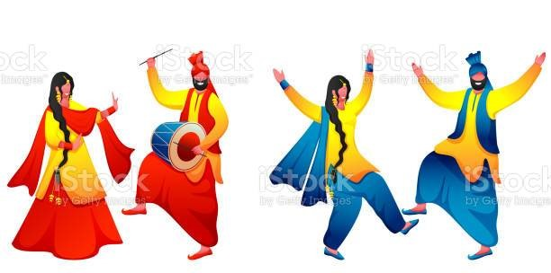

About Bhangra

Bhangra, folk dance and music of the Punjab (northwestern India and northeastern Pakistan) and the popular music genre that emerged from it in the mid-to-late 20th century.
Cultivated in two separate but interactive styles—one centred in South Asia, the other within the South Asian community of the United Kingdom—the newer bhangra blends various Western popular musics with the original Punjabi tradition. It enjoys an immense following in South Asia and within the South Asian diaspora.
Dance is my favourite hobby and I enjoy dancing a lot. I started dancing when I was five years old and when I got older; my parents enrolled me in dance classes to pursue this passion.
I cannot go a day without dance, that is how much I love dancing. I tried many dance forms but discovered that I am most comfortable in Indian classical dance specially Bhangra. Thus, I am learning Bhangra from my dance teacher.
I aspire to become a renowned Bhangra dancer so that I can represent this classical dance internationally. Dancing makes me feel happy and relaxed, thus I love to dance. I always participate in dance competitions at my school and have even won a few.